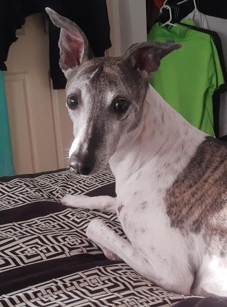
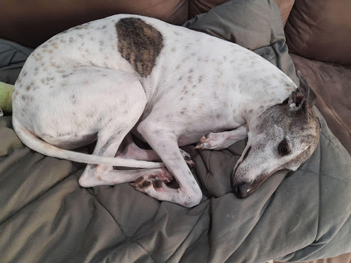

Brynn has been missing since 15th July 2021
Last sighted 17th July 2021 at 2:30am on Walrus Drive, Ashmore.
White and brindle whippet, desexed, female, around 18kg.
She's very shy. Try to coax her into your yard with food if you see her.
Generous reward for safe return
 